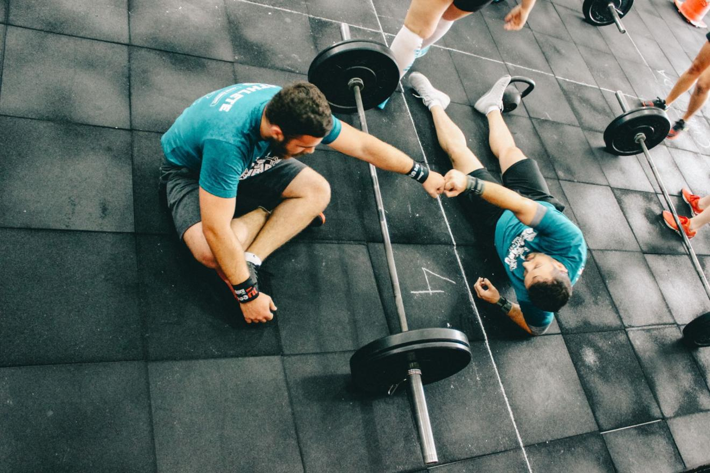

People always forget about the nature of a learning curve.
If you’re relatively new to training or trying out something new, you’ve no doubt felt really excited to get started. Everything is new and wonderful, you’re motivated, you want to get to work quickly and reach your goals…like…yesterday… This time things are going to be different!
You may or may not have felt this wave of excitement multiple times. I have.
Maybe you’ve yet to truly establish a good routine, or maybe you’ve fallen off the horse so many times you’re really demotivated, you’re just in need of some inspiration. Something new, a little self-pep talk, always leads to a little bit of renewed focus.
Yet, what continually happens when that initial enthusiasm wanes?
After the first few weeks of building some momentum it’s not uncommon to feel stuck, stagnant or otherwise unsure of where you’re going and what you’re doing. If you’re like a lot of people, enthusiasm wanes and you fall off the wagon. Maybe for a long period of time, maybe only for a week or two, until you can build up a little more inspiration.
Tell me if this sounds familiar…
This is a cyclical hump that everyone will come to at some point in their training experience. I’ve hit it many times. Here’s how you can break the cycle.
The BiPolar Learning Curve
I see it regularly in my work because it happens to pretty much everyone, so much so, they have a name for it: The BiPolar Learning Curve.
See when you take on something new, there is often an initial interest; You grasp some basic concepts; Feel good about the process and then you hit a point in time when results slow, learning slows, maybe you’re not getting to where you want to be fast enough and interest is lost.
Previously you’ve probably had a few weeks of crushing it, things were going awesome.
Human psychology can tolerate just about anything for 2-3 weeks, and your physiology isn’t far behind outside of complete starvation or masochistic exercise routines.
Up until this point, your physiology hasn’t made any traumatic shifts, so you don’t yet feel starved by your diet or completely worn out by your exercise schedule either, but you’re probably starting to.
You may have noticed some quick improvements with load or reps on the exercises you’re doing. Maybe your scale weight dropped a bit the first week but has made it’s way up slowly over the past couple — the opposite of what you wanted! — so the water retention most beginners tend to experience in the first month is now demotivating you.
Or maybe you’re chasing some muscle mass gains and that water retention seemed awesome the first three or four weeks but now your scale weight is starting to drop again. Oh my!
You may even be feeling flat out bored with the routine, maybe you need something new, maybe you don’t. Shiny and new is always better to the human psyche and people are just as guilty of jumping ship too early on an exercise routine as they are of not switching things up at all.
Typically about 2-6 weeks in (depending on the person) we tend to reach what I like to call the “I Give Up”point. It really just represents the downward trend you’re about to experience.
In the last few days, maybe a week, you start to notice the downward cycle, a physical change in the opposite direction you want to go, a loss of motivation, a loss of confidence, maybe even a loss in ability (more on that later). Things were going so well!
Doubt sets in. Imposter syndrome sets in. You start telling yourself that there are other things you’d rather be doing with your time. Maybe the scale didn’t move as much as you’d have hoped, you’re not seeing a ton of muscle on your frame or the girth measurements don’t seem to have changed much.
Physiology works slowly, so slowly if you don’t know what to expect it’s no wonder you’re demotivated, but getting over that first hump is a key element to success.
Typically to get to a level of proficiency you have to push through a period of discomfort with a little more effort than usual. Most of us don’t even have to try that hard at first because the room for improvement is so great.
When you hit your hump, you actually have to double down for at least a few more days, maybe a few weeks before you can reach your inflection point and get back on your path to proficiency. This happens cyclically most of the time. You’ll see a period of tremendous growth, things level off and you’re stuck scratching your head.
The sad reality is that the better you get at exercise (or eating) the harder and harder results are to come by. We all arrive at maintenance periods eventually.
That inflection point is really the point in training that I’m striving to hit with all of my clients. Sometimes they get it in the first few months, sometimes I’ll admit it’s taken years. It’s something you have to experience and it plays out how it plays out. The grind can be longer for some than others as well.
Why am I telling you all this?
Hope
One of the principle reasons for this downward cycle is a lack of hope. We lose motivation when we feel we have no hope in achieving something we want to achieve. Without hope, motivation cannot exist. Without motivation we see effort as futile.
There are other physiological reasons as well but a great deal of this process is the psychological element. This learning curve applies to nearly everything and anything you want to learn and get good at but it especially applies to fitness and nutrition objectives.
The changes we create to our bodies actually happen fairly slowly. We lose weight at maybe 1-2 lbs a week and we gain the good muscle mass at maybe half that. Who wants to punish themselves for three months just to lose a measly 10 lbs? Well the answer to that of course, is no one. That’s why you have to make the process less punitive and more self discovery.
You don’t have to punish yourself with diet and exercise to see a good result, you just have to be smart about your approach.
Yes, accumulated fatigue from your workouts has probably started to set in, depending on how extreme you’ve gone. Hunger and other sensations that fight to keep your weight/fat/lean mass consistent have also kicked in by now, depending on how intense the energy or macronutrient deficit you’ve created. These physiological symptoms, can make the psychological element seem even worse but maintaining a growth mindset is key long term.
There are no life hacks that are going to fully prepare you for this or help you avoid it entirely. You must experience it and discover what works for you. You don’t have to give up everything you love but there may be some trade offs in the short and long term. You may even find yourself not particularly interested in things you used be obsessed about (chocolate for me…).
Everyone has their own unique journey to experience. You have to keep a positive outlook, prepare for adversity, push through the rough times and ride the waves of success when you’re experiencing it, you will look back and feel really good about the experience. As my father once said, “there is no satisfaction in easy.”
However, one thing research does tell us is that is that creating realistic expectations in advance of a pursuit can temper our expectations. We all have different hurdles to jump over but the one thing that connects us all is the fact that we will all experience set backs.
People who expect hurdles embrace the struggle and clear them. People who go into the process expecting it to be easy as pie never clear the hurdles because they are not prepared to put in the effort.
Overconfidence is human nature. We often expect the process to be smooth and painless. I’m telling you this to prepare you for the fact that it won’t be. I can’t prepare you for the grind itself, that’s something you have to experience but without doubt you will face a roadblock at some point.
We all do.
Now what are you going to do about it?
Pro-Tip:
Always start — and do your best to plan around — with the expectation that you will run into trouble at some point. If you can, try to anticipate problems before they occur — rely on previous hiccups you’ve experienced — and try to come up with solutions before you experiences those set backs. Being prepared with a few viable solutions before you find yourself in hot water, will smooth out the journey.
Article credit: Skill Based Fitness / CC BY
Cover photo: Victor Freitas